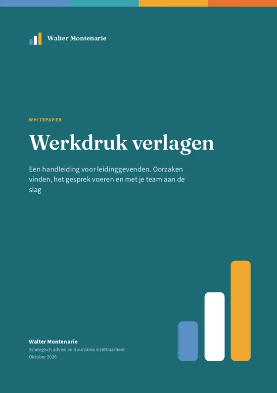

Artikelen Werkdruk
Werkdruk
Werkdruk is een van de grootste oorzaken van verzuim. Hier vind je wat werkdruk is, waar hij vandaan komt en wat je er als leidinggevende samen met je team aan doet.
Wat is werkdruk?
Werkdruk is de verhouding tussen wat het werk van je vraagt en wat je aankunt. Een drukke week is geen probleem: werkdruk hoort bij werk. Het wordt een probleem als de druk te hoog is en te lang duurt zonder dat je herstelt. Te hoge werkdruk is de meest genoemde oorzaak van verzuim door het werk.

Gratis whitepaperWerkdruk verlagenEen handleiding voor leidinggevenden. Oorzaken vinden, het gesprek voeren en met je team aan de slag.Download de whitepaper TrainingTraining werkdruk verlagenNa twee korte sessies weet je team waar de werkdruk vandaan komt en is het al bezig met een eigen plan.Bekijk de training Gratis toolHet JD-R-modelZie in één beeld wat energie kost en wat energie geeft in het werk.Naar de toolArtikelen over werkdruk
-
Moet je je druk maken over werkdruk?
Werkdruk kent veel oorzaken, in de organisatie en in eigen gedrag. Wat ik leerde van tientallen werkdruktrainingen en wat je er als team aan kunt doen.
Lees het artikel -
Herstel is geen luxe: rust inbouwen in een volle werkweek
Wat onderzoek zegt over herstel en loskomen van het werk. Met zes afspraken voor een werkweek met rust erin.
Lees het artikel -
Week van de Werkstress 2026: ideeën voor je team
Van 9 tot en met 13 november 2026. Zeven ideeën en een voorbeeldprogramma om er meer uit te halen dan een losse workshop.
Lees het artikel -
Na de Week van de Werkstress: hoe hou je het vol?
Een week aandacht is een goed begin. Zo maak je er in 66 dagen een vaste gewoonte van, met je team en in het werk zelf.
Lees het artikel -
Jij bent de thermostaat van je team
Hoe jij met druk, pauzes en mail na werktijd omgaat, bepaalt mee hoeveel stress je team ervaart. Met zes gewoontes die je team van je overneemt.
Lees het artikel -
Bevlogenheid is geen luxe
Hoe je met het JD-R-model en het ABC van autonomie, binding en competentie stress verlaagt en bevlogenheid vergroot.
Lees het artikel -
Bevlogenheid die je team kan volhouden
Een bevlogen team is mooi. Maar houdt het dit tempo vol? Vijf dingen die je als leidinggevende kunt doen.
Lees het artikel
Hier samen mee aan de slag?
Vertel me wat er speelt. In een gratis gesprek van 30 minuten kijken we wat zinvol is voor jouw organisatie.
Andere thema's: Burn-out en verzuim Vitaliteitsbeleid Cultuurverandering